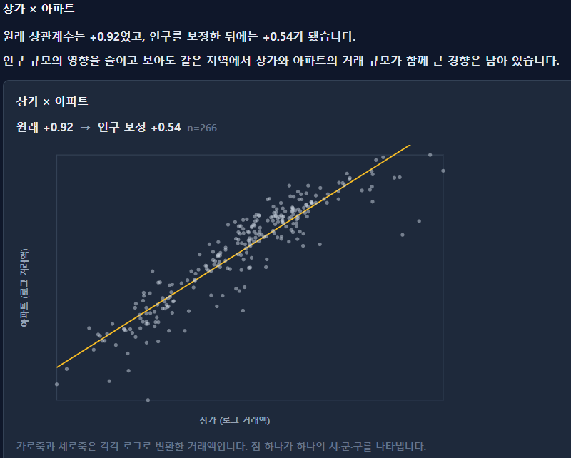

서두 · 학습목표
두 변수가 함께 움직이면 원인과 결과의 관계일까요?
공부 시간이 긴 학생일수록 시험 점수가 높게 나타났다고 가정해 보겠습니다.
그렇다면 공부 시간을 한 시간 늘리면 시험 점수도 반드시 올라갈까요?
그렇게 단정할 수는 없습니다. 공부 시간과 시험 점수는 서로 관련되어 있을 수 있지만, 학생의 학습 의욕이나 사전 학습 수준 등 다른 요인도 영향을 줄 수 있기 때문입니다.
상관관계는 두 변수가 함께 변화하는 모습을 나타냅니다. 반면 인과관계는 한 변수를 변화시켰을 때 다른 변수에 어떤 영향을 미치는지에 관한 관계입니다.
두 개념은 서로 연결되어 있지만 같은 의미는 아닙니다.
이번 장에서는 산점도와 상관계수를 통해 두 변수의 관계를 살펴보고, 관찰된 관계를 원인과 결과로 해석할 때 무엇을 주의해야 하는지 알아보겠습니다.
이번 장의 학습목표
- 산점도에서 관계의 방향과 형태를 파악합니다.
- Pearson 상관계수와 Spearman 순위상관계수의 차이를 이해합니다.
- 상관계수가 0이어도 변수 사이에 관계가 존재할 수 있음을 알아봅니다.
- 이상치와 집단 구성이 상관계수에 미치는 영향을 살펴봅니다.
- 상관관계와 인과관계를 구별하고, 실제 부동산 통계에 적용합니다.
산점도부터 읽기
상관계수를 계산하기 전에 점들의 분포를 확인하세요
두 변수의 관계를 살펴볼 때 가장 먼저 사용할 수 있는 그래프가 산점도(Scatter plot)입니다.
산점도는 하나의 관측 대상에서 얻은 두 값을 가로축과 세로축에 표시한 그래프입니다.
예를 들어 토지의 면적을 가로축에, 거래단가를 세로축에 놓으면 거래 한 건이 점 하나로 표시됩니다.
점을 표시한 뒤에는 다음을 살펴봅니다.
- 오른쪽으로 갈수록 점들이 높아지는가, 낮아지는가?
- 점들이 직선에 가깝게 모여 있는가, 곡선을 이루는가?
- 서로 다른 집단이 따로 모여 있는가?
- 다른 점들과 크게 떨어진 관측값이 있는가?
이러한 특징을 확인하면 상관계수 하나로는 알기 어려운 관계를 발견할 수 있습니다.
11장부터 사용한 공통 학습 자료 30건으로 살펴보겠습니다.
점을 가리키거나 관측값을 선택하면 면적·단가·유형을 확인할 수 있습니다.
두 계수는 같은 원래 좌표에서 계산합니다. 순위 산점도가 아닙니다. 7번 제외는 민감도를 확인하는 예시이며 삭제 권장이 아닙니다.
거래단가 = 거래금액 ÷ 면적이라는 나눗셈만으로도 음의 상관이 나타날 수 있습니다. 아래 세 토지는 거래금액이 모두 1억원입니다. 공통 학습 자료 30건과는 다른 가상 예제입니다.
| 면적 | 거래금액 | 거래단가 |
|---|---|---|
| 100㎡ | 1억원 | 100만원/㎡ |
| 200㎡ | 1억원 | 50만원/㎡ |
| 400㎡ | 1억원 | 25만원/㎡ |
면적이 커질수록 같은 금액을 더 넓은 면적으로 나누므로 단가는 낮아집니다. 이 세 점의 Pearson r은 약 −0.929입니다. 이 값은 나눗셈에서 나온 관계입니다. 인과효과, 면적 할인율, 개별 부동산의 가격 보정률로 읽지 않습니다.
이 자료에서 계산한 Pearson 상관계수는 다음과 같습니다.
- 면적과 거래단가: r ≈ −0.649
- 층과 거래단가: r ≈ 0.195
면적과 거래단가 사이에는 음의 상관이 나타납니다.
즉, 이 자료에서는 면적이 큰 거래일수록 단가가 낮은 경향이 관찰됩니다.
반면 층과 거래단가의 상관계수는 상대적으로 0에 가까워, 이 자료에서 직선적인 관계가 약하게 나타납니다.
하지만 이것만으로 면적이 증가하면 단가가 하락한다거나, 층이 거래가격에 영향을 미치지 않는다고 결론 내릴 수는 없습니다.
거래 유형과 위치, 토지의 이용 상황 등 다른 조건이 함께 반영되어 있을 수 있기 때문입니다.
또한 이 자료는 실제 거래 모집단의 대표성이 검증되지 않은 학습용 자료입니다.
산점도와 상관계수는 관찰된 관계를 보여주는 것이지, 특정 요인의 가격 효과를 직접 계산한 결과는 아닙니다.
Pearson 상관계수
두 변수가 직선적으로 얼마나 함께 움직이는지 나타냅니다
두 변수 사이의 직선적인 관계를 숫자로 요약하는 대표적인 방법이 Pearson 상관계수(r)입니다.
Pearson 상관계수는 두 변수가 각자의 평균을 기준으로 얼마나 함께 움직이는지 나타냅니다.
예를 들어 면적이 평균보다 큰 거래에서 단가도 평균보다 높은 경향이 있다면 양의 상관에 기여합니다.
반대로 면적이 평균보다 큰 거래에서 단가가 평균보다 낮은 경향이 있다면 음의 상관에 기여합니다.
상관계수는 −1에서 +1 사이의 값을 갖습니다. 단, 두 변수 모두 변동이 있어 상관계수가 정의되는 경우입니다.
| 상관계수 | 의미 |
|---|---|
| r > 0 | 한 변수가 클수록 다른 변수도 큰 경향 |
| r < 0 | 한 변수가 클수록 다른 변수는 작은 경향 |
| r ≈ 0 | 직선적인 관계가 약함 |
| r = +1 | 모든 점이 우상향 직선 위에 있음 |
| r = −1 | 모든 점이 우하향 직선 위에 있음 |
절댓값이 1에 가까울수록 관측점들이 하나의 직선에 가깝게 놓이는 경향이 있습니다.
하지만 상관계수의 크기만으로 관계가 강한지 약한지를 일률적으로 판단해서는 안 됩니다.
자료의 성격과 분석 목적에 따라 같은 상관계수도 다르게 해석될 수 있습니다.
또한 상관계수는 단위가 없습니다.
예를 들어 면적을 ㎡에서 평으로 환산해도 같은 관측값을 사용한다면 Pearson 상관계수는 변하지 않습니다.
주의할 점은 상관계수가 회귀계수와 다르다는 사실입니다.
r=0.6이라는 결과가 X가 1 증가할 때 Y가 0.6 증가한다는 뜻은 아닙니다.
상관계수는 직선적인 관계의 방향과 정도를 나타내지만, 변수의 단위를 반영한 변화량은 알려주지 않습니다.
Pearson 상관계수의 계산식
Pearson 상관계수는 다음과 같이 계산합니다.
r = Σ[(xᵢ−x̄)(yᵢ−ȳ)] / √[Σ(xᵢ−x̄)² × Σ(yᵢ−ȳ)²]
여기서 x̄와 ȳ는 각 변수의 평균입니다.
이 식은 두 변수의 공분산을 각 변수의 표준편차로 표준화한 형태와 같습니다.
두 변수 중 하나가 모두 같은 값이면 표준편차가 0이므로 상관계수를 계산할 수 없습니다.
또한 Pearson 상관계수는 X와 Y를 바꾸어 계산해도 값이 같습니다.
즉, r(X,Y)=r(Y,X)입니다.
따라서 상관계수 자체에는 어느 변수가 원인이고 어느 변수가 결과인지에 관한 정보가 들어 있지 않습니다.
상관계수가 0일 때
상관계수가 0이어도 두 변수 사이에 관계가 있을 수 있습니다
상관계수가 0에 가까우면 두 변수 사이에 아무런 관계도 없는 것일까요?
그렇지는 않습니다.
Pearson 상관계수는 직선적인 관계를 요약하기 때문에 곡선 형태의 관계를 충분히 나타내지 못할 수 있습니다.
예를 들어 X가 증가할 때 Y가 처음에는 감소하다가, 어느 지점부터 다시 증가하는 경우를 생각해 보겠습니다.
이러한 관계는 U자 모양으로 나타납니다.
그림의 가상 예제에서는 다음 관계를 사용합니다.
Y = X²
X의 값이 정해지면 Y도 정확하게 결정됩니다.
그런데 X가 0을 중심으로 대칭적으로 분포한다면 Pearson 상관계수는 0이 될 수 있습니다.
왼쪽에서는 X가 증가할수록 Y가 감소하고, 오른쪽에서는 X가 증가할수록 Y가 증가하기 때문입니다.
두 방향의 움직임이 상쇄되는 것입니다.
즉, 상관계수가 0이라는 사실은 직선적인 관계가 없거나 약하다는 뜻이지, 모든 형태의 관계가 없다는 뜻은 아닙니다.
따라서 상관계수를 해석할 때는 산점도의 형태를 반드시 함께 확인하는 것이 좋습니다.
상관계수가 0이면 두 변수가 독립일까요?
일반적으로 그렇지 않습니다.
두 변수가 독립이고 분산이 유한하며 양수인 경우 상관계수는 0입니다.
하지만 상관계수가 0이라고 해서 반드시 독립인 것은 아닙니다.
앞의 Y=X² 사례처럼 한 변수의 값이 다른 변수에 의해 결정되는 관계에서도 Pearson 상관계수가 0이 될 수 있습니다.
다만 이변량 정규분포처럼 추가적인 조건이 충족되는 경우에는 상관계수 0으로부터 독립성을 판단할 수 있습니다.
Spearman 순위상관계수
값의 차이보다 순서가 함께 변하는지 살펴봅니다
Pearson 상관계수는 원래의 수치를 이용해 직선적인 관계를 계산합니다.
반면 Spearman 순위상관계수(ρₛ)는 관측값을 순위로 바꾼 뒤 그 순위 사이의 관계를 계산합니다.
예를 들어 면적이 작은 거래부터 큰 거래까지 순위를 정하고, 거래단가도 낮은 순서부터 높은 순서까지 순위를 정합니다.
그다음 두 순위가 얼마나 비슷하게 움직이는지 살펴보는 것입니다.
이 방법은 두 변수의 관계가 반드시 직선일 필요 없이, 한 변수가 증가할수록 다른 변수가 대체로 계속 증가하거나 감소하는 단조 관계를 파악하는 데 유용합니다.
공통 학습 자료의 면적과 거래단가를 비교하면 다음과 같습니다.
| 계산 방법 | 상관계수 |
|---|---|
| Pearson 상관 | −0.649 |
| Spearman 순위상관 | −0.857 |
두 계산 모두 음의 관계를 보여주지만 그 크기는 다릅니다.
이 자료에서는 면적과 거래단가의 순위 관계가 원래 수치의 직선적인 관계보다 더 뚜렷하게 나타난 것입니다.
하지만 Spearman의 절댓값이 더 크다고 해서 항상 더 정확한 방법이라는 뜻은 아닙니다.
두 방법은 서로 다른 특징을 요약합니다.
또한 순위상관도 모든 문제를 해결하지는 못합니다. U자형 관계처럼 중간에 방향이 바뀌는 경우에는 관계를 제대로 요약하지 못할 수 있습니다.
어떤 상관계수를 사용할지는 자료의 형태와 분석하려는 관계에 따라 결정해야 합니다.
순위상관은 어떻게 계산할까요?
Spearman 상관계수는 각 변수의 관측값을 순위로 변환한 뒤 Pearson 상관계수를 계산한 값입니다.
같은 값이 여러 개 있으면 일반적으로 평균 순위를 부여합니다.
순위상관은 값의 간격보다 순서에 초점을 맞추기 때문에 극단적인 수치의 영향을 줄이는 데 도움이 될 수 있습니다.
다만 동점이 많은 자료나 표본수가 적은 경우에는 순위 부여 방식과 통계적 추론 방법을 확인해야 합니다.
이상치와 관측 범위
관측값 하나가 상관계수를 크게 바꿀 수도 있습니다
상관계수는 어떤 관측값이 포함되었는지에 따라 달라질 수 있습니다.
특히 다른 자료와 크게 떨어진 관측값은 상관계수에 상당한 영향을 줄 수 있습니다.
공통 학습 자료에서 면적과 거래단가의 Pearson 상관계수는 약 −0.649입니다.
그런데 7번 관측값을 제외하면 약 −0.738로 달라집니다.
| 자료 구성 | Pearson 상관계수 |
|---|---|
| 전체 30건 | −0.649 |
| 7번 관측값 제외 | −0.738 |
한 건을 제외했을 뿐인데 음의 상관이 더 뚜렷해졌습니다.
그렇다고 7번 관측값을 제거한 결과가 더 정확하다는 뜻은 아닙니다.
해당 값이 입력 오류인지, 다른 조건의 거래인지, 실제로 가능한 극단적인 거래인지 먼저 확인해야 합니다.
반대로 특정 범위의 자료만 선택하는 것도 상관계수에 영향을 줄 수 있습니다.
예를 들어 면적이 매우 비슷한 토지만 선택하면, 넓은 면적 범위에서 계산한 상관계수와 다른 결과가 나올 수 있습니다.
따라서 상관계수를 비교할 때는 표본수와 관측 범위, 필터 조건을 함께 확인해야 합니다.
결측치 처리도 중요합니다.
면적이나 거래단가 중 하나라도 누락되었다면 해당 변수 쌍의 상관계수를 계산할 수 없습니다.
여러 변수의 상관행렬에서는 변수 쌍마다 실제 사용된 관측 건수가 달라질 수 있으므로 유효 표본수를 함께 살펴봐야 합니다.
7번은 행 위치가 아닌 원자료의 id=7입니다. 상업, 면적 22㎡, 단가 480만원/㎡인 한 건만 제외합니다. 전체는 유효한 면적·단가 쌍 30건, 제외 후에는 29건입니다. 층·단가도 유효한 쌍 30건입니다.
집단 혼합
전체에서는 음의 상관인데 집단별로는 양의 상관일 수 있습니다
여러 집단의 자료를 합쳐 분석할 때는 특별히 주의해야 합니다.
각 집단에서 나타나는 관계와 전체 자료에서 나타나는 관계가 다를 수 있기 때문입니다.
예를 들어 두 집단 A와 B의 관측값이 다음과 같다고 가정해 보겠습니다.
| 집단 | X | Y |
|---|---|---|
| A | 1, 2, 3 | 8, 9, 10 |
| B | 7, 8, 9 | 2, 3, 4 |
A집단에서는 X가 증가할수록 Y도 증가합니다.
B집단에서도 마찬가지입니다.
그런데 두 집단을 합치면 어떤 관계가 나타날까요?
관측값은 여섯 개로 고정됩니다. 보기만 바꾸며, 전체와 부분 집단은 서로 다른 질문에 답합니다. 집단을 나누면 반드시 더 정확해지는 것은 아닙니다.
각 집단 내부에서는 양의 상관이 나타나지만, 두 집단을 합친 전체 자료에서는 음의 상관이 나타납니다.
A는 X가 작은 대신 Y가 높은 집단이고, B는 X가 큰 대신 Y가 낮은 집단이기 때문입니다.
즉, 전체 상관에는 집단 내부의 관계뿐 아니라 집단 사이의 평균 수준 차이도 반영됩니다.
이런 방향 반전은 심프슨 역설과 관련된 집계 현상을 이해하는 데 도움이 됩니다.
CH2 Macro에서 같은 지역의 면적과 거래단가를 볼 때도 같습니다. 전체 거래의 상관계수와, 용도지역 또는 지목으로 나눈 상관계수는 달라질 수 있습니다. 대지와 전, 상업지역과 녹지지역은 면적 분포와 단가 수준이 다르기 때문입니다. 이 차이를 용도나 지목의 인과효과, 면적 할인율, 개별 물건의 가격 보정률로 쓰지 않습니다.
다만 집단을 무조건 세분화하는 것이 정답은 아닙니다.
어떤 집단을 합치거나 나눌지는 자료의 구조와 분석 목적에 따라 결정해야 합니다.
상관관계와 인과관계
함께 움직인다는 사실만으로 원인을 알 수는 없습니다
두 변수 사이에 상관관계가 나타나는 이유는 여러 가지입니다.
예를 들어 공부 시간과 시험 점수 사이에 양의 상관이 있다고 가정해 보겠습니다.
가능한 설명은 하나만 있는 것이 아닙니다.
① X가 Y에 영향을 주는 경우
공부 시간이 늘어나면서 시험 점수가 높아질 수 있습니다.
② Y가 X에 영향을 주는 경우
시험 점수가 높은 학생일수록 공부에 흥미를 느껴 더 오래 공부할 수도 있습니다.
③ 다른 변수 Z가 X와 Y 모두에 영향을 주는 경우
학습 의욕이 높은 학생은 공부 시간도 길고 시험 점수도 높을 수 있습니다.
이처럼 같은 상관관계도 서로 다른 원인 구조에서 나타날 수 있습니다.
통계적으로 유의한 상관관계가 발견되었다고 해서 어느 설명이 옳은지 자동으로 결정되는 것은 아닙니다.
인과관계는 단순히 두 변수가 함께 움직이는지를 넘어, 한 변수에 개입했을 때 다른 변수가 어떻게 달라지는지를 묻는 문제입니다.
이를 판단하려면 연구 설계와 시간 순서, 교란 요인, 자료의 수집 과정 등을 검토해야 합니다.
무작위 배정 실험은 인과효과를 판단하는 데 중요한 방법이지만, 관찰자료에서는 실험처럼 조건을 통제하기 어려운 경우가 많습니다.
또한 인과효과가 존재하더라도 다른 요인이 관계를 상쇄하거나 측정 오류가 발생하면 단순 상관계수가 작게 나타날 수 있습니다.
따라서 상관계수가 크다는 사실과 인과효과가 크다는 사실은 서로 다릅니다.
회귀분석에 변수를 많이 넣으면 인과관계를 알 수 있을까요?
반드시 그렇지는 않습니다.
다중회귀분석을 이용하면 여러 변수의 통계적 관계를 동시에 살펴볼 수 있습니다.
하지만 통제변수를 많이 넣는다고 해서 인과효과가 자동으로 식별되는 것은 아닙니다.
원인과 결과 사이에 있는 매개변수를 통제하면 원래 알고 싶었던 전체 효과와 다른 값을 추정할 수 있습니다.
또한 두 변수의 공통 결과에 해당하는 변수를 통제하면 원래 없던 통계적 연관성이 나타날 수도 있습니다.
따라서 통제변수는 단순히 많이 선택하기보다 인과 구조와 분석 목적에 따라 결정해야 합니다.
불확실성과 보고
상관계수의 크기와 통계적 유의성은 다릅니다
상관계수는 두 변수의 관계를 요약하지만 표본으로 계산한 값이라는 점도 기억해야 합니다.
다른 표본을 추출하면 상관계수 역시 달라질 수 있습니다.
따라서 모집단의 상관관계를 추론하려면 표본수와 표집 조건을 고려해야 합니다.
상관계수의 p값이 작다는 것은 검정에서 정한 가설과 모형 아래 관찰된 결과가 이례적이라는 뜻이지, 관계가 강하다는 뜻은 아닙니다.
표본수가 매우 많으면 작은 상관계수도 통계적으로 유의하게 나타날 수 있습니다.
반대로 표본수가 적으면 비교적 큰 상관계수가 관찰되더라도 불확실성이 클 수 있습니다.
상관분석 결과를 제시할 때는 다음 내용을 함께 확인하는 것이 좋습니다.
- Pearson 또는 Spearman 등 사용한 상관계수의 종류
- 상관계수의 값과 방향
- 계산에 실제 사용된 유효한 관측 쌍의 수
- 산점도와 이상치, 집단별 분포
- 변수의 단위와 변환, 필터 조건
- 필요할 경우 p값과 적절한 신뢰구간
특히 같은 단지의 반복 거래나 시간적으로 연관된 거래를 독립된 표본으로 처리하면 통계적 불확실성을 충분히 반영하지 못할 수 있습니다.
또한 많은 변수 쌍을 탐색한 뒤 유의한 결과만 선택했다면 다중검정 문제도 고려해야 합니다.
Pearson 상관계수의 유의성 검정
독립적으로 추출한 이변량 정규모형에서 모집단의 상관계수가 0이라는 가설을 검정할 때는 다음 t통계량을 사용할 수 있습니다.
t = r × √[(n−2)/(1−r²)]
자유도는 n−2입니다.
이 계산은 표본수와 분포, 관측값의 독립성 등 필요한 조건을 충족해야 합니다.
상관계수 자체를 계산하는 데 정규분포가 반드시 필요한 것은 아니지만, p값과 신뢰구간을 해석할 때는 적절한 통계적 가정이 필요합니다.
확인 문제
상관계수가 알려주는 것과 알려주지 않는 것을 구별하세요
- Pearson 상관계수가 0이면 두 변수는 독립일까요?
답과 해설
일반적으로 아닙니다.
Pearson 상관계수는 직선적인 관계를 요약합니다.
Y=X²와 같은 대칭적인 비선형 관계에서는 두 변수가 명확하게 연결되어 있어도 상관계수가 0일 수 있습니다.
- 면적 단위를 ㎡에서 평으로 바꾸면 Pearson 상관계수도 달라질까요?
답과 해설
달라지지 않습니다.
양의 상수를 곱하는 단위 변환은 Pearson 상관계수를 바꾸지 않습니다.
다만 회귀계수의 기울기나 수치 단위는 달라질 수 있습니다.
- 두 집단의 상관계수가 모두 양수라면 전체 자료에서도 양의 상관이 나타날까요?
답과 해설
반드시 그렇지는 않습니다.
집단별 평균 수준과 자료 구성이 다르면 전체 자료의 상관관계가 반대 방향으로 나타날 수 있습니다.
따라서 집단별 상관과 전체 상관을 함께 살펴봐야 합니다.
- 상관계수가 통계적으로 유의하면 X를 변화시켜 Y를 변화시킬 수 있다는 뜻일까요?
답과 해설
아닙니다.
유의한 상관관계는 변수 사이에 통계적 연관성이 있다는 근거일 수 있지만, 인과관계를 증명하지는 않습니다.
인과효과를 판단하려면 연구 설계와 교란 요인, 시간 순서 등을 별도로 검토해야 합니다.
CH2 Macro에서 읽기
Macro Insight의 상가·아파트 상관을 읽어 보세요
Macro Insight의 「부동산 유형별 상관관계」에서는 최근 3년 동안 전국 시·군·구의 유형별 거래 규모를 비교합니다. 아래는 사용자가 제공한 상가·아파트 화면입니다. 앞의 공통 학습 자료 30건과는 관측 단위가 다릅니다.

점 하나는 개별 거래가 아니라 하나의 시·군·구를 나타냅니다. 가로축은 상가의 로그 거래액, 세로축은 아파트의 로그 거래액입니다. 이 산점도와 노란 추세선은 인구 보정 전의 로그 거래액 관계입니다. 인구 보정 후 잔차 산점도가 아닙니다.
화면의 원래 Pearson r = +0.92 → 로그 인구를 보정한 상관 = +0.54
원래 상관은 같은 시·군·구에서 두 유형의 거래 규모가 함께 큰 경향을 보여 줍니다. 인구를 보정하면 양의 관계가 약해지지만 남아 있습니다. 인구 외의 공통 요인이나 지역 구성의 영향도 남을 수 있으므로, 상가 거래가 아파트 거래를 늘린다는 인과효과로 해석할 수는 없습니다.
실제 구현의 계산 방식과 유효 표본수
이 화면은 전국 시·군·구와 최근 3년의 집계 자료를 사용합니다. 기준월과 지역 코드 정리 기준이 적용되며, 개별 토지 화면의 지역·용도·지목 필터를 그대로 이어받는 분석은 아닙니다. 비교할 유형 쌍을 바꾸면 계산에 쓰는 지역도 달라질 수 있습니다.
두 유형의 거래액이 모두 양수인 지역만 사용해 각각 자연로그로 변환하고 Pearson 상관을 구합니다. 원자료에서 누락된 유형의 거래액은 0으로 읽힌 뒤 이 양수 조건에서 제외됩니다. 인구 보정에는 여기에 양수인 인구가 있는 지역만 사용합니다. 각 로그 거래액을 절편과 로그 인구에 선형 회귀한 뒤, 두 잔차 사이의 Pearson 상관을 계산합니다. 거래액을 인구로 단순히 나누는 방법과 다릅니다.
API는 유형 쌍별 원래 유효 지역 수 n과 인구 보정 유효 지역 수 n_pop을 별도로 반환합니다. 첨부 화면의 n=266은 원래 상관의 유효 지역 수이며, 인구 보정의 n_pop은 현재 카드에 따로 표시되지 않습니다. 두 표본수가 같다고 단정할 수 없습니다. 캡처만으로 +0.92와 +0.54의 원자료 재계산이나 같은 표본 여부를 확인할 수는 없습니다.
확인한 Insight 화면은 Pearson 상관과 인구 보정 상관을 제공합니다. Spearman, 상관의 p값·신뢰구간은 이 화면에서 제공하지 않습니다. 백엔드는 계수를 소수 넷째 자리로 반올림하고 화면은 둘째 자리까지 표시합니다.
인구 보정 상관은 회귀계수나 표준화 회귀계수가 아닙니다. 노란 선은 표시된 로그 좌표의 선형 추세입니다. 어느 쪽도 개별 물건의 적정가격이나 인과효과를 산출하지 않습니다. 지역 단위의 관계를 개별 거래의 관계로 옮겨 해석하지 않도록 주의하세요.
토지 면적과 거래단가를 비교하는 경우에는 단가가 거래금액을 면적으로 나눈 값이라는 구조도 확인해야 합니다. 거래총액·유형·시점과 자료 범위를 함께 살펴보고, 면적과 단가의 음의 상관을 가격 할인 효과로 바로 해석하지 마세요.
결론 · 학습 요약
상관계수만 보지 말고 자료의 구조와 관계의 형태를 함께 살펴보세요
상관계수는 두 변수가 함께 달라지는 모습을 하나의 숫자로 요약합니다.
하지만 숫자 하나로 모든 관계를 설명할 수는 없습니다.
같은 상관계수라도 산점도의 모양과 자료의 구성, 관측 범위에 따라 해석이 달라질 수 있기 때문입니다.
이번 장에서 기억할 내용
- 산점도: 두 변수의 방향과 형태, 집단 분포, 이상치를 먼저 확인합니다.
- Pearson 상관: 두 변수 사이의 직선적인 관계를 요약합니다.
- Spearman 순위상관: 변수의 순위가 함께 증가하거나 감소하는 단조 관계를 요약합니다.
- 상관계수 0: 직선적인 관계가 없다는 뜻일 수 있지만, 비선형 관계나 의존성이 없다는 보장은 아닙니다.
- 자료의 구성: 이상치, 관측 범위, 결측치, 집단 혼합에 따라 상관계수가 달라질 수 있습니다.
- 상관과 인과: 상관계수의 크기나 통계적 유의성만으로 인과관계를 판단할 수는 없습니다.
- 실무 해석: 상관계수와 함께 가격 구조, 거래 조건, 시장 집단의 특성을 살펴봐야 합니다.
다음 17장 「단순선형회귀와 최소제곱법」에서는 상관관계에서 한 걸음 더 나아가, 두 변수 사이의 평균적인 관계를 직선으로 나타내고 예측값을 계산하는 방법을 알아보겠습니다.
참고자료
- NIST/SEMATECH: Scatter Plot — 산점도의 관계·곡선·이상치와 인과 해석의 한계.
참고자료의 기존 확인일: 2026-10-08. 네 개 그림은 공통 학습 자료와 별도 가상 예제로 작성한 계산 및 개념도입니다.